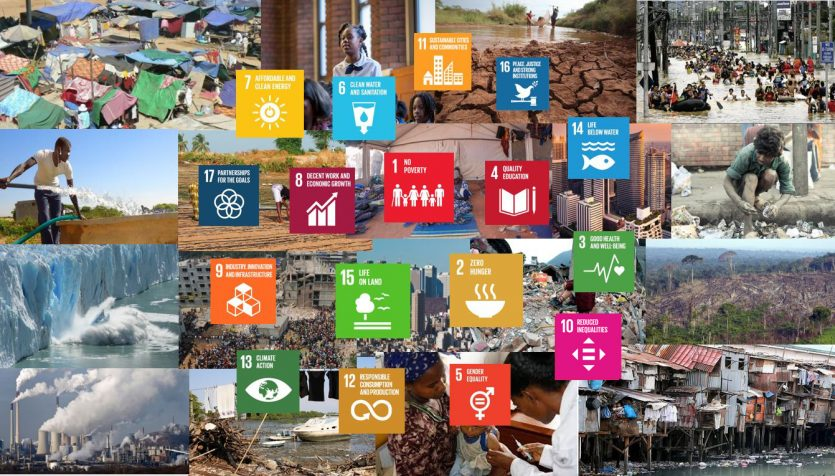
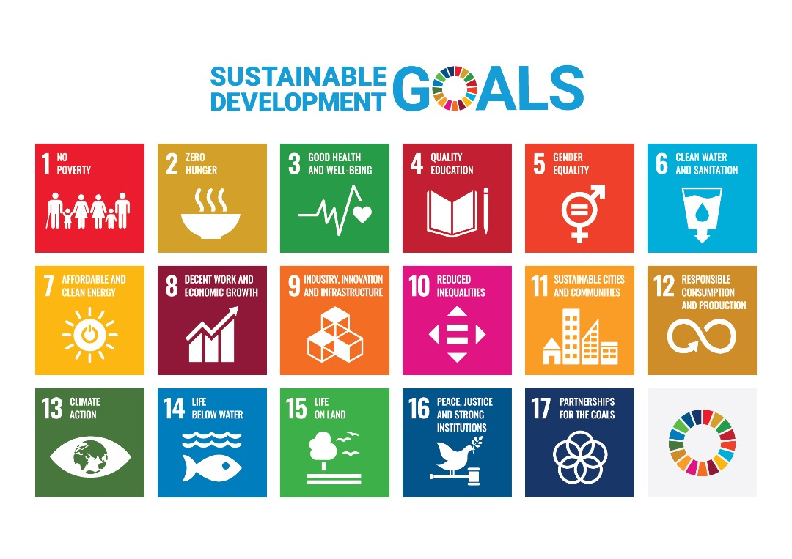

SDGs (Sustainable Development Goals) atau Tujuan Pembangunan Berkelanjutan adalah sebuah program global yang dikeluarkan oleh Perserikatan Bangsa-Bangsa (PBB) pada tahun 2015 dan diharapkan dapat tercapai pada tahun 2030.
SDGs ini berisi 17 tujuan yang saling berkaitan untuk menyelesaikan isu-isu dan tantangan yang terjadi dalam skala global. Tujuan-tujuan ini mencakup berbagai aspek pembangunan, termasuk ekonomi, sosial, dan lingkungan. Untuk mencapai tujuan-tujuan ini, dibutuhkan aksi konkret dan kerja sama antara pemerintah, sektor swasta, dan juga masyarakat. Diperlukan juga evaluasi rutin di setiap negara untuk memantau kemajuan yang dicapai. Semua negara diharapkan dapat memiliki strategi tersendiri dalam melaksanakan SDGs ini sesuai dengan kondisi dan keperluan masing-masing daerah. SDGs ini menjadi sebuah komitmen global untuk menciptakan masa depan yang lebih baik dan berkelanjutan untuk generasi muda yang akan datang.

Apa itu 🎯SDGs🌎?

